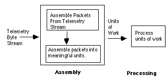
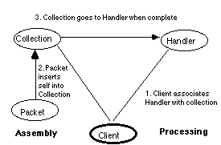

Stephen P. Berczuk
Affiliation at Initial Publication:
Massachusetts Institute of Technology Center for Space Research
Room NE80-6015 / 77 Massachusetts Avenue
Cambridge, MA 02139
(617) 253-3840 /berczuk@mit.edu
Current Address:
Using a pattern such as Builder [Design], which constructs objects from a generic data stream based on the content in the stream, will decouple the interfaces between different development groups, by insulating the operations team from knowing the definition of units of work, and the details of which packets belong in which collections. It is still necessary to decouple the upstream and downstream components.
The problem can be summarized in this way:
In an environment where components developed by separate teams with different focuses, must interoperate, it is necessary to partition responsibilities in such a way that dependencies can be reduced while interoperability can be maintained. In particular, the well-defined portions of the system should be isolated from the "to be specified" pieces. This may be particularly important if teh teams are geographically distributed.
A telemetry application is used here as an example. Telemetry processing systems are examples of applications in which one subsystem creates objects from external inputs in a well-defined manner and another subsystem processes these collected data, in a less clearly defined manner. This context can, however, be generalized to include any system in which the interfaces between a producer and consumers need to be divided cleanly.
* one team is responsible for converting a "byte-stream" into telemetry packets and assembling the telemetry packets into units that represent the information in its original form[2],
* other teams are responsible for processing the data from the telemetry.
The following diagram illustrates a typical telemetry processing system:

In a science satellite telemetry processing application the requirements for different software components evolve at different rates. This is partially due to the fact that these applications are developed by different teams. Often these teams have different operational and scientific requirements. Telemetry handling is divided into two phases:
* Assembly , which processes objects from an input stream, classifies them and assembles larger units, as necessary. Some of the units are composed of a number of packets; an example of this is a partition. Some of the units are simply individual packets; an example is packets containing status information about the spacecraft or the instrument. This software is typically well defined, and being key to any downstream processing, it is preferable that it be built and tested as soon as possible.
* Processing , which analyses or reports on the data. This is typically more loosely defined since there are often many ways to process data (consider scientific data analysis applications). Because of the variety of ways in which data can be processed we wish to maintain a flexible system. The processing requirements may also take longer to come to closure since they are subject to the influence of more players.
The operational requirements for the transmission and assembly of telemetry packets are well defined since they are based on well established standards and on the specifications of the satellite hardware and controlling software. Telemetry assembly is also rather similar from mission to mission, thus requirements can be more easily defined.
Processing the assembled units of data is less well defined, since the operational requirements vary from mission to mission. Furthermore, these requirements may depend on preliminary analysis being done by scientists who designed the experiments on the satellite.[3] Additionally there may be a desire to have a variety of processing operations to be performed in different clients which will need the services of the assembly system.
We need a way to isolate the "assembly" system from the "processing" system so that the assembly system can be developed and tested without waiting for the processing system's requirements to firm up, thus liberating one part of the system from the development delays caused by ill defined requirements for the downstream part of the system.
Each component is developed by distinct teams of developers, so building a tightly integrated system would create a great deal of uncertainty in the schedule.
Traditionally the systems are designed with end to end processing in mind. If the end to end processing is not well defined, then the entire system can be held back while the details of downstream processing are resolved.
We wish to isolate the assembler from the processor , so we need a way for the assembler to hand the completed unit off to the processor when the unit is available. We want a processing function to be added to a system dynamically, without changing the assembly software.
To summarize the forces at work:
* Requirements for one component of a system are available before downstream processing is defined.
* There is a need to test the assembly code independent of the processing software.
* Assembly and downstream processing may be developed by separate, often non-collocated groups.
* The assembly system should be developed assuming nothing of the downstream processing.
We can resolve the problem of decoupling the development of two systems, while maintaining operational coupling by the following:
By providing a facility to set handlers to be invoked when a complete unit is available for processing, we are able to isolate the assembly software from the processing software. Virtual functions help make the details of the assembly operation transparent.
This is similar to a callback pattern, where a handler is specified to an object to be called when an event occurs, but the motivation differs. The emphasis in this pattern is on providing a way to allow teams of developers to decouple their work.
The classes representing the units of work that the assembly software processes have a method to set a handler which will be called when the unit is complete. The units of work can be individual data objects or objects created by assembling objects from a data stream. The interface to the assembly mechanism can be hidden by using a Factory pattern or Exemplar [Idioms] Idiom. In doing this we would provide that each data object received by the assembly stream be classified to be an instance of a subclass of a processable unit, the packet, and a virtual apply() method is invoked. In the context of each apply() call, an object is inserted into the appropriate collection, and if the collection is complete, the handler is called.
Examples of collections include partitions (which represent a buffer of data), and status message packets.
The client creates a handler object (it can also be a pointer to a function) and sets the handler for objects of the same class of collection. Only units which interest the client will be sent to it. The handler can perform a variety of operations, such as interpreting the data stream and performing analysis, or simply reporting the information to scientist s or operations staff.
The participants in this pattern are:
* the collection classes, which have methods to set handlers to be invoked when the collection is complete,
* the handler which will process an instance of collection, and
* the client, which associates a handler with a collection.
The solution is illustrated in the following diagram:

The collection (in this case, a Partition) class has a method to set a class-wide handler to be called when a complete unit is available, and a dispose() method to invoke the handler on the unit of work, The collection can also have an isComplete() method.
The processing client sets the handlers to be called when a "unit of work" is available using the setHandler() method on the collection class. The unit of work handler is set for each class of collections. The client then gets the next packet from the data stream using a technique based on a factory pattern, which classifies the bytes that represent a packet into the appropriate subclass. The virtual process() method is then invoked on the packet. The process method assembles the packet into a larger collection, if necessary. If the packet completes the unit of work (recall that a single packet can represent a unit of work) the handler is invoked.
PartitionHandler aCHandler;
// Handler to be called for a full partition collection
StatusMsgHandler aSOMsgHandler;
// Handler to be called for a single packet unit
class Partition
// a collection that is assembled from a number of related packets
{
public:
// constructors and the like
setHandler(/*function taking a pointer to a Partition*/);
// set the handler to be called for all complete partitions
void dispose();
// apply the handler to the object
};
ingest_client(){
StandAloneObject::setHandler(aSOMsgHandler);
Collection::setHandler(aCHandler);
Packet* pkt = getNextPacket();
// create a subclass of packet based on info in data stream.
pkt->process();
// virtual function puts the packet into the right collection if //appropriate) and the collection checks to see if it is full.
// if pkt is standalone, the handler is called.
}
Packet::process()
{
// takes the packet and inserts it into the collection, perhaps
// doing some processingto determine
// which of a number of collections is appropriate
theCollection->insert(this);
if(theCollection->isComplete())
theCollection->dispose();
// dispatch the collection to the appropriate handler
}
This
pattern results in a situation where the assembly software needs to know only
the following about the downstream processing:* What the units of work are that will be dispatched. The details of this which depend on the individual instruments can be hidden from the assembly client through the use of Factories and virtual functions.
* The methods used to set the handlers.
Additionally, the downstream processing client needs to know only:
* The type of units of work to expect.
* The handling that each unit of work should be afforded.
Applications of this pattern include telemetry processing where you must classify and assemble packets from a telemetry stream into partitions, and certain packets represent status messages, which are not assembled into partitions. This pattern can be also be applied in any system where there is a need for one system to perform an operation, and then hand results over to another system for further processing. It can be extended by allowing a list of handlers to be called whenever a unit of work is available, in a manner similar to the way the standard C library provides the atexit() function[4].
Related Patterns
The use of a generic constructor to classify & build objects from a data stream, is a variant of the Factory [Design]. The particular variation of Factory used in the implementation on which this pattern is based is from the Exemplar idiom in [Idioms]. The use of virtual functions on objects to hide the details of assembly from the assembly application can be expanded to be a separate pattern.
References
The PLoP 94 workshop attendees, especially Doug Schmidt made many useful comments on the early drafts of this paper. Discussions with Lena Davis help me clarify my thinking about Patterns and Pattern Languages in general.
This work was supported in part by NASA/GSFC contract number NAS5-30612.